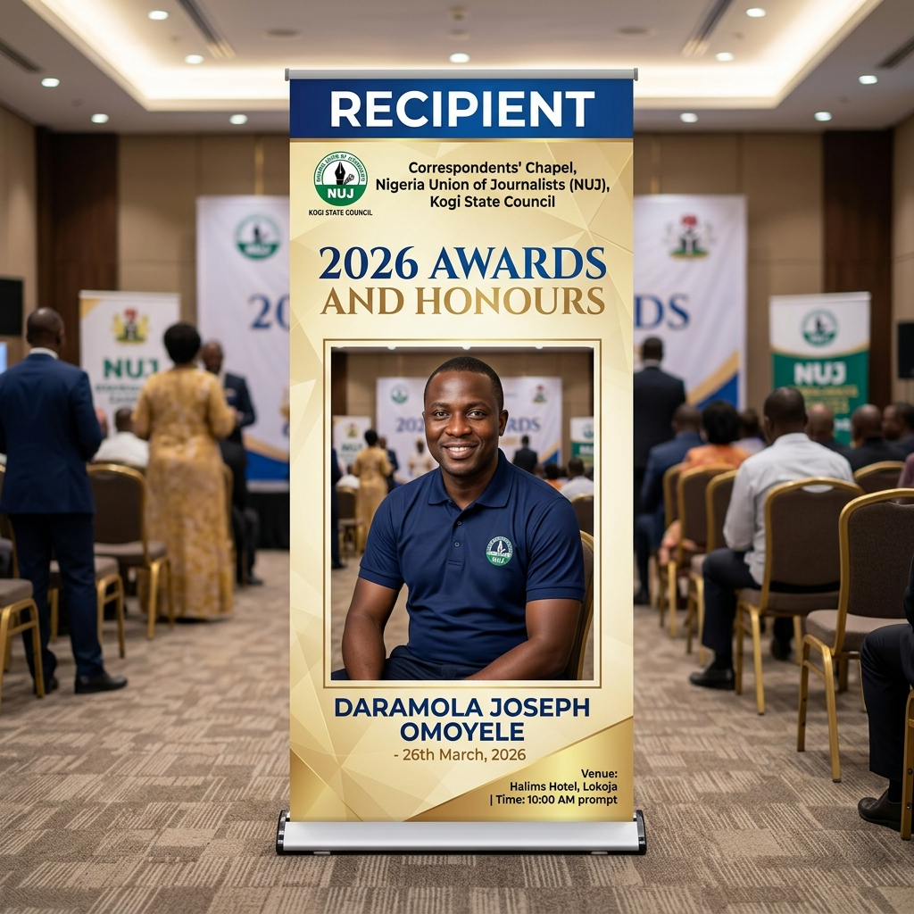

Economist | Senior Data Analyst | Regulatory & Policy Analytics Specialist
Delivering data-driven economic insights for regulation, public finance, and policy design with 15+ years of experience
I deliver data-driven economic insight for regulation, public finance, and policy design, supporting evidence-based decision-making under scrutiny.
15+ years of public-sector and consulting experience combined with advanced applied econometrics and regulatory compliance analytics.
Strong ability to communicate complex economic concepts to policymakers and non-technical audiences, ensuring actionable insights.
"If regulators must justify decisions under scrutiny, who better than an economist who builds auditable, data-driven systems?"
Univelcity Consulting | UK
Office of the Accountant General | Nigeria
Nigerian Postal Service | Nigeria
University of Essex (2023)
University of Ilorin (2006)
Developed for Kogi State Government, Nigeria
An innovative, gamified educational platform that transforms the learning of Kogi State's rich history and culture into an engaging digital experience. KogiQuest serves as a digital bridge between traditional heritage and modern technology, making cultural education accessible and entertaining for a tech-savvy audience.
Interactive quests and challenges that make history education engaging and memorable
Persistent accounts with progress tracking and personalized learning journeys
Global rankings to encourage healthy competition and sustained engagement
Milestone rewards and badges to celebrate learning accomplishments
This project demonstrates expertise in combining educational content with game design principles to create powerful tools for civic engagement and cultural preservation. It showcases capabilities in full-stack web development, UX/UI design, and digital education strategy within a governance and public-interest context.
Regulatory Analytics Platform
A comprehensive tax compliance and regulatory analytics platform demonstrating practical application of data science and econometric principles to real-world governance challenges. This system showcases expertise in building scalable compliance frameworks that enhance regulatory effectiveness and transparency.
Real-time monitoring and analytics for regulatory compliance tracking
Data-driven insights for tax administration and policy decisions
Visualization tools for complex regulatory data analysis
Evidence-based recommendations for regulatory improvements
Financial Security & Education Platform
An AI-powered web application designed for counterfeit Nigerian currency detection. NairaGuard serves as both a verification tool and an educational resource, helping users identify authentic Naira banknotes through a simulated AI scanner and detailed security feature guides.
Simulated AI-powered currency verification and authentication
Comprehensive guides on banknote security features
Interactive preview gallery of Nigerian currency denominations
Credit-based verification system for scan management
Correspondents' Chapel, Nigeria Union of Journalists (NUJ) Kogi State Council
Presented in recognition of outstanding contributions to Digital Solutions. Acknowledging the role of data-driven systems and digital innovation in advancing governance and societal problem-solving.

Nigeria Union of Journalists (NUJ) Kogi State Council
Recognized publicly during the 2026 Awards & Honours ceremony alongside distinguished leaders. Commemorated for applying deep analytical and digital expertise for public interest and societal impact.
An examination of administrative barriers and their impact on electoral participation, drawing from evidence of Nigeria's 2023 Presidential election. Published in African Studies Quarterly, Volume 24, Issue 2.
DOI: 10.37745/ijdes.13/vol14n14560
This paper examines internal structural consequences of capital flight through an Economic Linkages Framework, introducing the Domestic Capital Circulation Curve to illustrate how it weakens aggregate demand, productivity spillovers, employment, and the tax base in Nigeria.
View Journal ArticleA study using a Panel Autoregressive Distributed Lag (P-ARDL) model to examine FDI's impact on growth in Sub-Saharan Africa, highlighting the substantial long-run effects of foreign investment, human capital, and GDP per capita.
DOI: 10.37745/bjes.2013/vol14n15982
Journal article published in British Journal of Environmental Sciences, Volume 14, Issue 1, pages 59–82.
View Journal ArticleDOI: 10.30574/wjarr.2026.29.3.0785
Digital tax reforms that increase reporting frequency alter not only the reporting frequency of taxpayers but also the behavioural conditions that produce compliance information. This paper introduces behavioural reporting noise (BRN), defined as systematic distortions of reported compliance signals generated by adaptation to a reporting regime rather than underlying noncompliance.
View Journal ArticleDOI: 10.37745/ijdes.13/vol14n13344
This paper examines how Nigeria's fragmented digital identification architecture (NIN, BVN, SIM registries) affects administrative reach and state capacity. It finds that parallel registries produce systematic verification inconsistencies, raise transaction costs, constrain financial inclusion, and generate enforcement gaps.
View Paper PageDOI: 10.30574/wjarr.2026.29.1.0134
An analysis of religion's role as an economic institution in Sub-Saharan Africa, examining its impact on development and policy.
View Journal ArticleDOI: 10.21203/rs.3.rs-8864569/v1
Using a NARDL framework and wavelet coherence analysis, this study uncovers the asymmetric and time-frequency effects of insecurity and macroeconomic instability on Nigeria's growth. It concludes that sustainable growth depends on an integrated approach combining security measures and macroeconomic stabilisation.
Subtitle: How Business Owners, Accountants and Startups Can Handle Tax Queries, Audits and Assessments in Nigeria
ISBN: 9798248507344
ASIN: B0GNML97C6
A practical handbook explaining tax compliance procedures for small and medium-sized enterprises in Nigeria, including handling tax queries, audits, assessments, objections, and dispute resolution.
View on AmazonISBN: 979-8246609675
Subtitle: A Public-Interest Examination of Institutional Religion, Accountability, and Social Justice
This book examines the institutional role of religion in Nigeria and its relationship to governance, accountability, and social justice.
View on AmazonSubtitle: The Hidden Triggers, Risk Signals, and Tax Mistakes That Put UK SMEs on HMRC's Radar
ISBN: 979-8246539712
Paperback edition available
A practitioner-focused book analysing HMRC's risk-based compliance approach, explaining behavioural, financial, and data-driven indicators.
View paperback on AmazonUrging Nigerian youths to view participation in the 2027 General Election as a critical economic decision rather than just a political one. (April 2026)
Policy commentary examining the role of locally rooted policing structures anchored at the local government level. (March 2026)
Also featured in: National dailies and major news syndicates
Policy commentary analysing the role of functional and autonomous local governments in Nigeria. (March 2026)
Also featured in: National news platforms and print editions
Advocating for the inclusion of religious institutions in Nigeria's new tax reforms. (October 2025)
Also featured in: Nationwide Nigerian media outlets
Advocating for legal reforms to enable the use of the National Identification Number (NIN) to enhance voter registration and electoral transparency. (October 2025)
Also featured in: Other major Nigerian media outlets
Calls for integrating the NIN with tax systems, service delivery databases, and financial inclusion efforts. (September 2025)
Also featured in: The Eagle Online, Real News Magazine, and others
Consistently translating economic evidence into public policy debate for wider audiences across major Nigerian media outlets.
Colchester, Essex
United Kingdom
Open to hybrid, full-time, or part-time roles and travel as required.
Ready to bring data-driven economic insights to your organization.